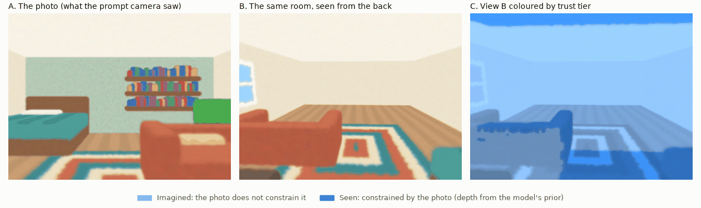
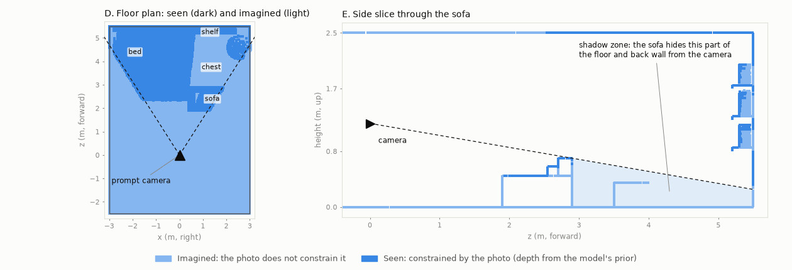
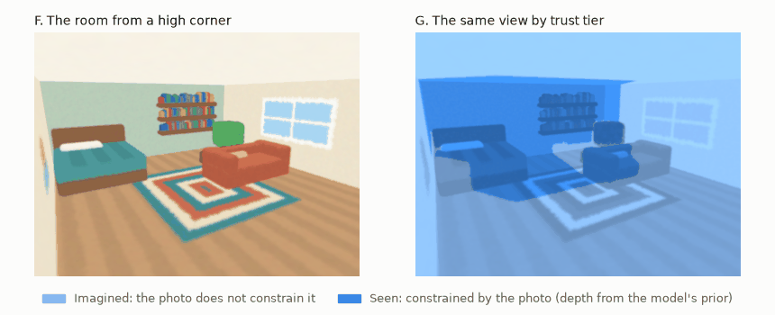
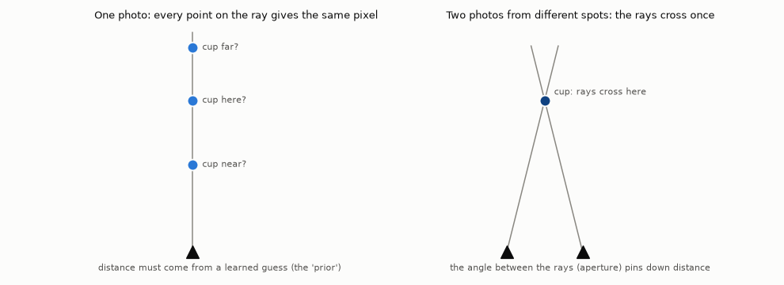
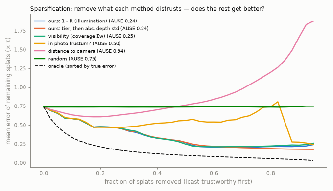

Stand where the photo was taken and switch on a flashlight as wide as the camera's view. What it touches is measured; everything behind you, outside the beam, or hidden behind furniture was never in the photo. Applied to a generated 3D world, this site calls the result a trust map, computed from an illumination score.
Try it
A 2D room with two pieces of furniture. Drag the camera, change its direction and field of view, and add a second photo; the dots show how well the photos constrain each point.
Two ways to add a photoStepping sideways adds parallax (distance for nearby points); turning adds coverage, not parallax. You need both.
What it looks like in 3D (our own synthetic room)
A synthetic room built for this site (about 118,000 splats, no third-party assets), rendered with this project's rasterizer.

Same room, three views. A: the photo. B: the room from the back. C: view B by tier; dark blue is what the photo constrained.Synthetic scene from scripts/make_figures.py; own work.

Where the photo looks, and what hides. D: the photo constrains a wedge, not the floor nearest the camera and not what the sofa hides. E: the sofa's shadow zone, including a chest no ray reaches.

From a high corner. In colour, then by tier: a plausible space with no sign of which parts the photo supports.
Why one photo cannot fix distance

Why one photo cannot fix distance. Strictly, the unobservable direction is depth and size together (near-and-small versus far-and-large): the velocity–depth ambiguity of reflection seismology. See the shadows page.
Does the maths beat plain visibility?
A practice exam with a known answer, as geophysicists run on synthetic Earth models: a public example 3D world plays the real room, a stand-in generator (a public depth network plus a room-box prior) rebuilds it from one photo, and every splat is graded against the truth. AUROC is how often the score ranks a badly wrong splat as less trustworthy than a good one (0.5 is a coin flip, 1.0 perfect).

Sparsification. Remove the splats a score distrusts most and see whether the rest gets better. Illumination and visibility nearly overlap; the frame test and distance do clearly worse.Pooled over the 12 synthetic-truth cases; stand-in generator, not Marble.
Honest readingThe score clearly beats the in-frame test and differs from plain visibility by only about 0.003 AUROC: detectable, negligible. The value of the seismic framing is conceptual (tiers, shadow zones), not a better score.
Where these numbers come from, and the caveats
Reproduced by experiments/wp0_baseline/reproduce.py, matching the earlier recorded run to four decimals. The generator is a stand-in, not Marble, and "imagined means wrong" is partly built in because the filled-in geometry is our own box prior. The twelve cases come from three truth worlds and four yaw angles each, so they are not independent.